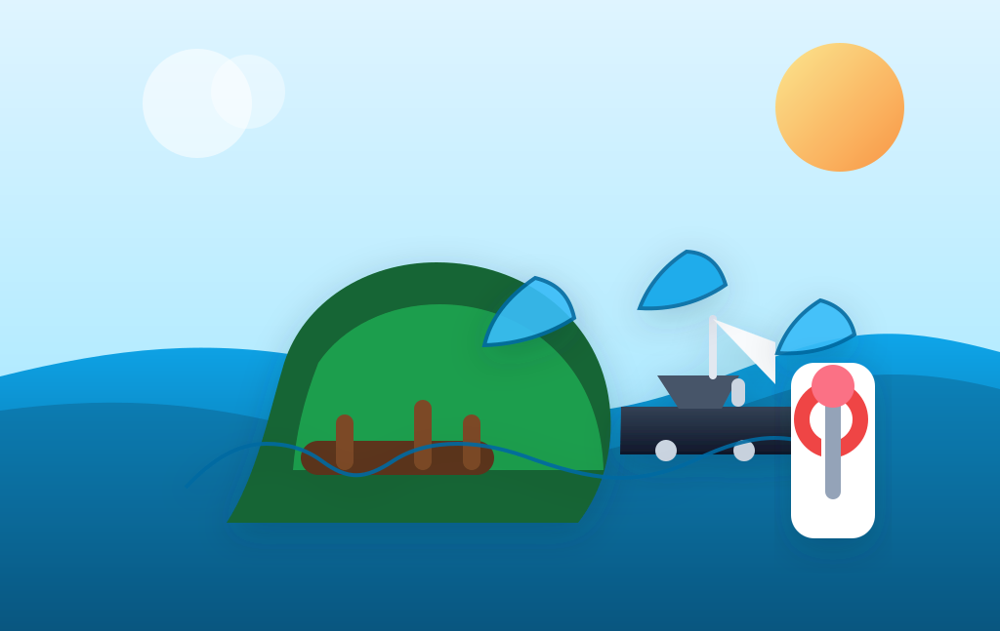

Soojenev ookean võib Kiribati kalatulu ära süüa

BBC kirjutab, et Kiribati riigieelarve on üsna otse seotud ookeaniga: üle 70% tuludest tuleb tuunipüügi lubadest, mida müüakse välismaistele laevadele.
Mure on see, et soojenevas vees liigub tuun ida poole. Kui kala kolib, kolivad ka laevad ja siis võib saareriigil kaduda korraga nii saak kui ka rahavoog. 3,4 miljoni ruutkilomeetri suurune majandusvöönd on küll tohutu, aga eelarvet see ise veel ei täida.
2024. aastal teenis Kiribati kalalubadest 137 miljonit dollarit ning aastatel 2018–2022 andsid need lubade müügid peaaegu kolmveerandi riigituludest. See on üsna karm meeldetuletus, et kliimamuutus ei söö ainult rannajoont, vaid võib omaette ära süüa ka riigi maksulaekumise.
Seda lugu tasub lugeda kui eelarveuudist, mitte ainult loodusuudist. Kui ookean muutub liiga soojaks, ei nihku ainult kalad; nihkub ka see koht, kust riik oma arved kinni maksab. Vähem romantiline kui merelained, aga palju otsesemalt rahakotis tuntav.
Loe algallikat: BBC News – "How climate change threatens the economic backbone of the Pacific"
selle artikli sisu sõnastatud AI poolt: (mudel gpt-5.4-mini)